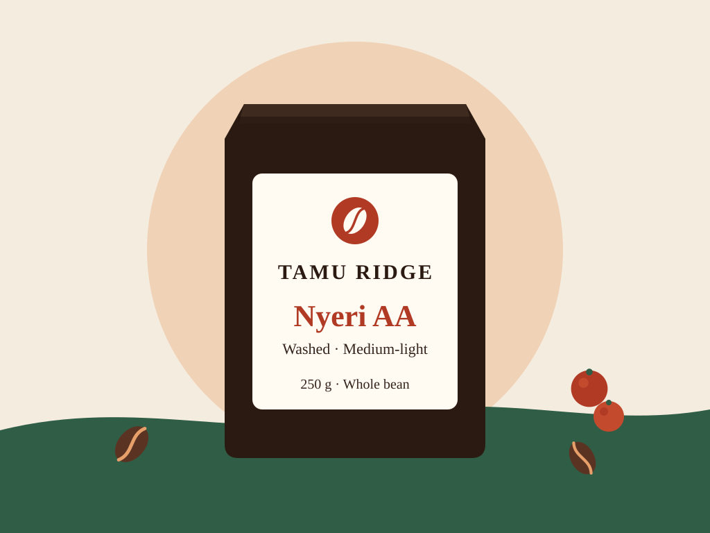
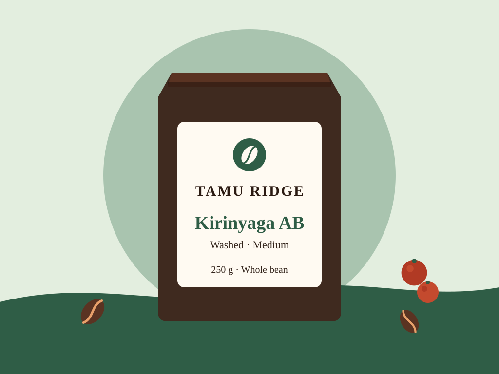
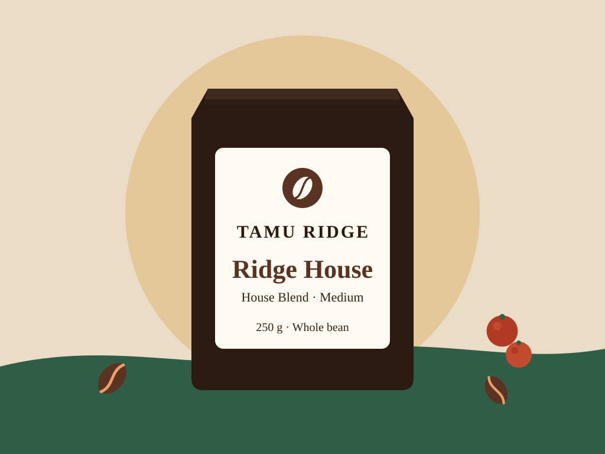
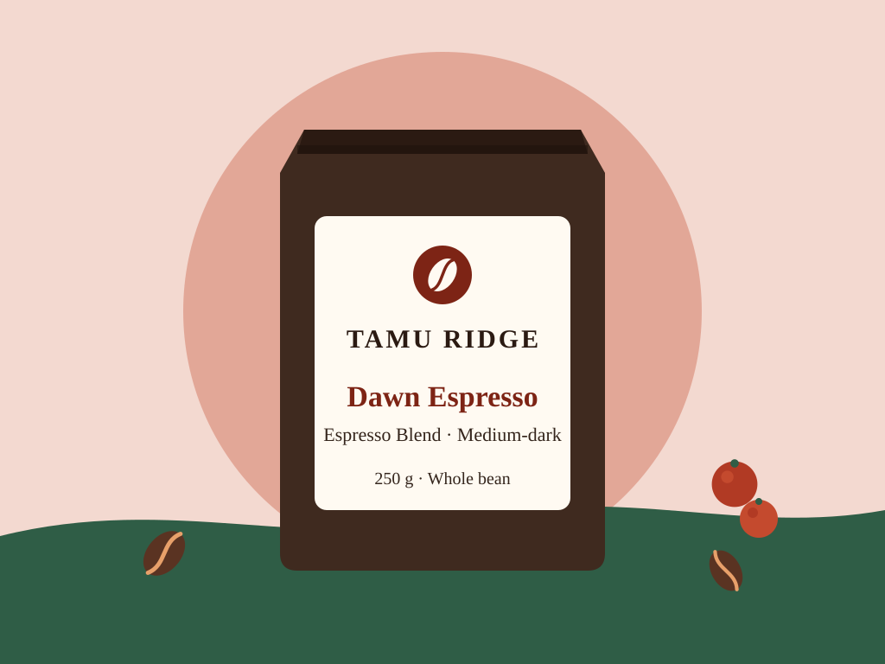
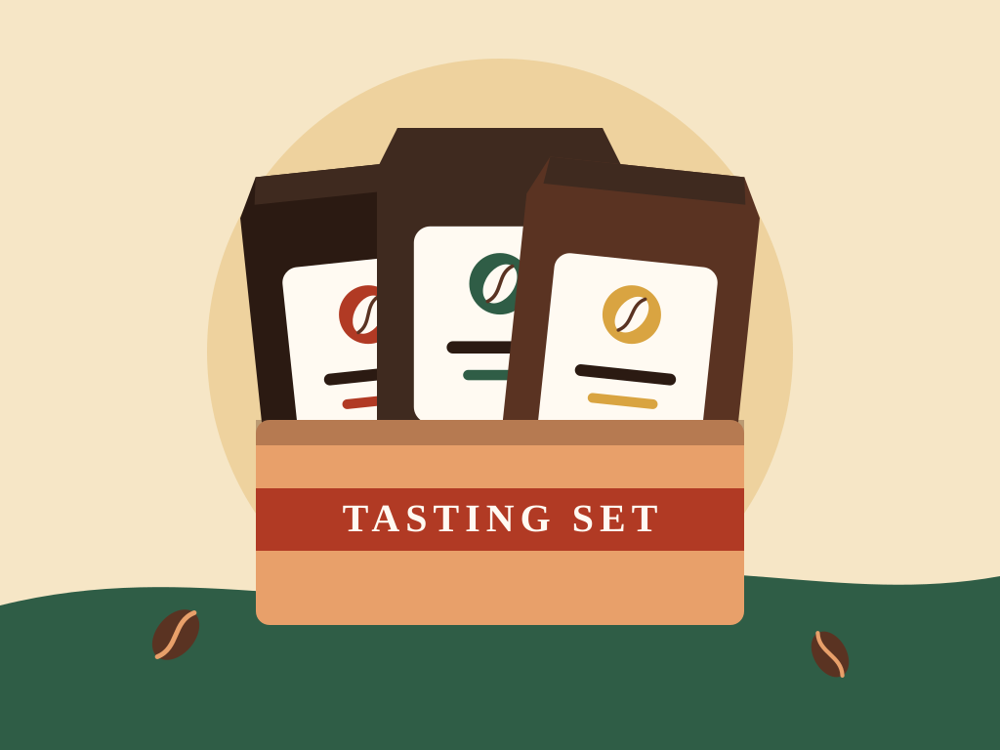
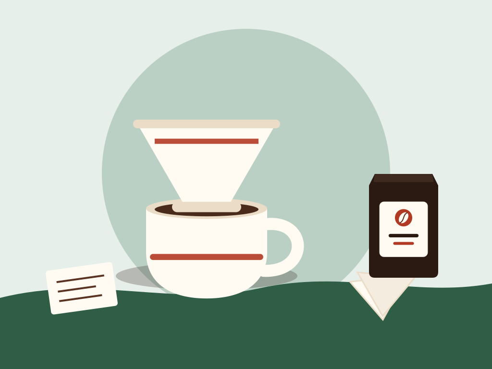

Our Coffees

Coffee profile
- Category: Single origin
- Origin: Smallholder cooperative, Nyeri County
- Process: Fully washed, dried on raised beds
- Altitude: 1,700 to 1,900 m
- Variety: SL28, SL34
- Roast: Medium-light
- Harvest: 2025 main crop
- Tasting notes: Blackcurrant, brown sugar, lemon zest
- Best for: Pour-over, AeroPress
- Price: KES 1,200 / 250 g
Nyeri AA Washed
Our flagship. Large, dense AA beans from high-altitude Nyeri farms give a juicy, blackcurrant-bright cup with a sweet brown-sugar finish. Roasted light enough to keep the fruit, developed enough to stay sweet.
Order on WhatsApp
Coffee profile
- Category: Single origin
- Origin: Smallholder cooperative, Kirinyaga County
- Process: Fully washed, dried on raised beds
- Altitude: 1,600 to 1,800 m
- Variety: SL28, Ruiru 11, Batian
- Roast: Medium
- Harvest: 2025 main crop
- Tasting notes: Red apple, cocoa nibs, orange peel
- Best for: Filter, French press
- Price: KES 1,050 / 250 g
Kirinyaga AB Washed
Rounder and gentler than the Nyeri, with crisp apple acidity and a cocoa depth. A forgiving coffee that tastes good however you brew it.
Order on WhatsApp
Coffee profile
- Category: Blend
- Origin: Nyeri and Kirinyaga lots
- Process: Washed
- Altitude: 1,600 to 1,900 m
- Variety: Mixed
- Roast: Medium
- Harvest: 2025 main crop
- Tasting notes: Milk chocolate, toasted hazelnut, brown sugar
- Best for: Everyday filter, moka, French press
- Price: KES 850 / 250 g
Ridge House Blend
Our everyday coffee. A blend of two cooperatives balanced for sweetness and body: smooth, nutty and chocolatey with just enough brightness to stay interesting.
Order on WhatsApp
Coffee profile
- Category: Blend
- Origin: Nyeri and Kirinyaga lots
- Process: Washed
- Altitude: 1,600 to 1,900 m
- Variety: Mixed
- Roast: Medium-dark
- Harvest: 2025 main crop
- Tasting notes: Dark chocolate, caramel, dried fig
- Best for: Espresso, moka, milk drinks
- Price: KES 900 / 250 g
Dawn Espresso Blend
Built for the machine. Dark chocolate and caramel with a thick body that stands up to milk. Pulls sweet at 18 g in, 36 g out in about 28 seconds.
Order on WhatsApp
Coffee profile
- Category: Brew kit
- Contents: 3 x 100 g bags: Nyeri AA, Kirinyaga AB, Ridge House
- Tasting notes: Three coffees, three styles
- Best for: Gifts and finding your favourite
- Price: KES 1,500
Discovery Tasting Set
Three 100 g bags in a gift-ready box with a tasting card and brew guide. The easiest way to find your favourite Kenyan coffee, or to send a thoughtful gift.
Order on WhatsApp
Coffee profile
- Category: Brew kit
- Contents: Ceramic dripper (size 02), 40 paper filters, 250 g coffee of your choice, recipe card
- Tasting notes: Your pick of Ridge House or Nyeri AA
- Best for: New home brewers
- Price: KES 3,200
Pour-Over Starter Kit
Everything you need to make cafe-quality filter coffee at home: a ceramic dripper, 40 filters, a bag of coffee and a recipe card that walks you through your first cup.
Order on WhatsApp